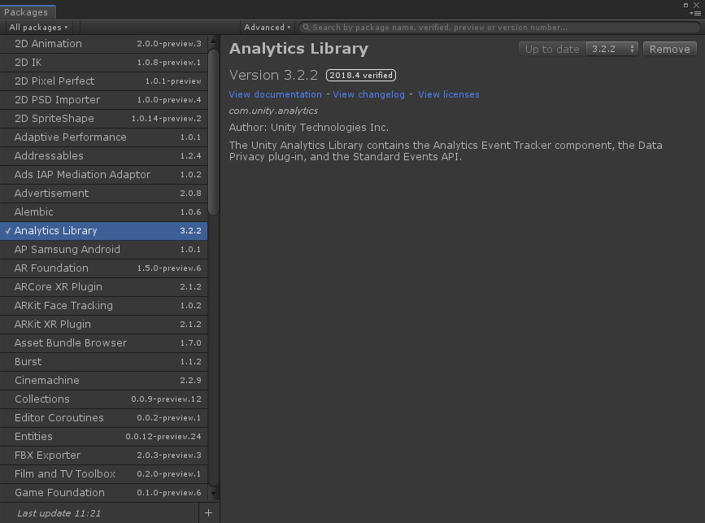
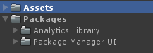

J’ai choisi de commencer la série d’articles sur le nouveau système de packages Unity.
Tout d’abord, car c’est un super outil pour la réutilisation de code et garantir une structure de projet modulaire. Mais, surtout, parce que j’utiliserai le système de packages pour partager les sources de mes futurs articles.
Remarque: Tous les codes présents sur le blog seront sous license MIT ou ISC. C’est à dire que tout est utilisable où bon vous semble (commercial ou non). il faut seulement recopier la license fournie dans vos sources pour la MIT. Svp, envoyez moi un mail et/ou citez moi dans les sources si jamais ça vous sert dans un projet. Je serais ravi de voir où le code peut être utile.
Trèves de bavardages, attaquons le sujet.
On aura pour objectif de faire une revue générale du package manager. Je vais présenter rapidement l’interface car elle est très simple d’utilisation. On prendra plus de temps pour expliquer ce qui se passe derrière la fenêtre du Package Manager et aborder la création, publication de packages.
Ce tutoriel se fera en trois articles sur le blog:
- Méthodes d’installation d’un package ( ce qui suit )
- Structure et création d’un package
- Publication d’un package (serveur local ou en ligne sur npmjs)
Découvrir le Package Manager
Depuis fin 2017, le nouveau système de packages a été introduit dans Unity.
Il a pour but de remplacer l’ancien système, toujours présent et utilisé par l’asset store. L’ancien système, à base de fichiers .unitypackage, est difficilement maintenable et les packages importés ont tendance à mettre le bazard dans le répertoire Assets/.
Il était temps pour Unity de se doter d’un système de packages avec révision ( versioning ), facile d’utilisation et de fournir certaines règles dans la structuration des packages.
Pour cela, Unity a choisi de baser son nouveau système de package sur npm, le système de package de node.js, réputé pour sa flexibilité et simplicité.
Interface package manager
Du côté de l’interface Unity, le package manager s’ouvre depuis Window > Package Manager. On tombe alors sur cette fenêtre :

Lorsque vous installez un package depuis le Package Manager, Unity ajoute une ligne de dépendance dans le fichier Répertoire projet/Packages/manifest.json de votre projet.
1 | { |
Toutes les dépendances du projet quelles soient officielles (com.unity. …) ou non sont répertoriées dans le manifest.json.
Concrètement, que se passe-t-il ?
Lorsqu’une dépendance est ajoutée au manifest, Unity va regarder dans son registre de packages principal ( https://packages.unity.com ) ou va tenter de résoudre le chemin renseigné pour trouver les sources du package. Si le package et la version sont trouvés alors il est importé dans le projet. Sinon un message d’erreur est levé dans la console ou une popup d’erreur est lancée à l’ouverture du projet.
Si tout se passe bien, les fichiers sources du package seront importés ici :

Les scripts/assets sont alors utilisables dans votre projet. Pour les packages récupérés en ligne, ils seront stockés en cache dans le dossier de Répertoire projet/Library/PackageCache de votre projet Unity.
Attention ! Il ne faut pas modifier les packages en cache directement. Toutes les modifications seront rapidement perdues si on vient à rafraichir et ré-importer le package par exemple. L’idée derrière la gestion par packages est de ne pas avoir à modifier les scripts d’un package s’il est bien constitué mais seulement de l’utiliser. Pensez à garder les changements de côté si jamais vous faites des modifications sur les scripts/assets d’un package.
Façons d’installer un package
Il existe pleins de manières d’installer un package.
Package Manager
Il est possible d’ajouter un package local directement en cliquant sur le ‘+’ en bas de la fenêtre du package manager. (2018.4)

Vous avez la possibilité d’ajouter une dépendance à un package situé localement sur votre machine. Il faut indiquer le fichier package.json du package à importer. Il s’agit du fichier d’informations du package (voir l’article : Structure et création d’un package).
L’import du package a pour effet d’ajouter une ligne de dépendance dans le fichier manifest.json pointant vers le répertoire du package.
1 | { |
Edition du fichier manifest.json
Il peut être plus intéressant de modifier directement le manifest.json du projet ( Dossier Répertoire projet > Packages > manifest.json ).
Package local
Pour ajouter un package local dans le projet, il suffit de renseigner le chemin vers le répertoire où se trouve le fichier de configuration package.json que vous voulez importer.
Ajoutez alors file: devant le nom du répertoire pour indiquer à Unity qu’il s’agit d’un package local.
1 | { |
Remarque: le chemin peut être renseigné depuis le repertoire du projet (test2).
GIT
Pour aller plus loin, vous avez la possibilité de renseigner un package situé sur un repo git. Ce qui est bien pour partager le package avec d’autres collaborateurs. Voici différentes manières d’importer les packages :
1 | { |
Comme vous le voyez, nous avons la possibilité de renseigner les types: commits, tags ou branches pour spécifier une révision particulière. Et Unity supporte les protocoles https et ssh.
Cette orthographe est aussi acceptée :
1 | { |
Ceci permet d’éviter de renseigner le .git à la fin.
Attention
La limite des méthodes local et Git se trouve dans le versioning et l’enchaînement des dépendances.
Passer par git ne permet pas de gérer correctement les versions des packages. En effet, c’est assez fastidieux de renseigner le répertoire ainsi que le numéro de commit, la branche ou le tag pour pointer une version particulière. On souhaiterait seulement donner le numéro de version du package, sans avoir à se soucier de l’url. Comme suit :
1 | { |
De plus si le package importé est dépendant d’autres packages, Unity ne fait actuellement pas la correspondance si l’on renseigne un lien git. Les dépendances du package.json ne sont pas ajoutées automatiquement au projet. Cela oblige à renseigner chaque dépendances du package importé dans le manifest.json. Ce qui peut s’avérer très long et compliqué à faire lorsque qu’il y a beaucoup de dépendances de dépendances…
La solution ? Le registre de packages…
Scoped registry
Il s’agit là d’installer un package non pas présent sur un repo git, mais, qui a été publié dans un registre de packages. Le principal registre de packages npm est https://www.npmjs.com/, il est donc possible de publier et importer des packages depuis ce registre. Mais il est aussi possible de créer son propre registre de package. Pour celà, je recommende verdaccio qui vous permettra de créer un registre perso et de publier seulement pour ce registre. Vous pourrez donc faire tourner un registre de packages sur un réseaux local si vous le souhaitez. Je discuterais de cette partie plus en détail dans l’article conscacré à la publication d’un package.
Pour ajouter un répertoire de packages, il faut le renseigner dans le manifest.json. Ajoutez alors un tableau scopedRegistries dans le manifest et écrivez l’adresse du registre :
1 | { |
La variable scope permet seulement de grouper les packages selon un nom commun.
Par exemple, pour les prochains articles, les codes sources que je proposerai seront récupérables sur npmjs.com. Il suffira de modifier le manifest comme suit :
1 | "scopedRegistries": [ |
Tous les packages seront sous le scope com.adlucem.
Important Les packages officiels Unity sont ni plus ni moins des packages publiés sur un registre consacré. ( https://packages.unity.com )
1 | { |
Si le package importé est dépendant de packages du même scope ou dépendant de packages situé dans un registre ateignable par Unity. Les dépendances seront résolues et les packages seront importés automatiquement. C’est là toute la force des registres de packages.
(Bonus) Par le code
Une façon d’installer un package qui n’est pas présentée dans le manuel Unity est l’installation par l’API C#. Cela peut s’avérer utile si vous souhaitez dynamiser l’import et la suppréssion de packages depuis un script de l’éditeur.
Pour cela, Unity met à notre disposition un client effectuant des appels au package manager.
Dans le namespace UnityEditor.PackageManager, vous pouvez référencer la classe statique Client.
Pour ajouter une dépendance, il suffit alors d’appeler:
1 | using UnityEditor.PackageManager |
Il faut renseigner le nom du package suivi de la version pour importer le package.
S’il s’agit d’un package local, vous pouvez mettre, à la place du numéro de version, le chemin vers le dossier local. Sans oublier le file://. La même chose pour git sans oublier le git+https:// ou git+ssh://.
Le client possède plusieurs méthodes statiques pour ajouter, supprimer… des packages. Voir la Doc Client
Cas d’usage : J’ai eu l’occasion de travailler sur des projets VR multi-plateformes. Une des problématiques était de gérer l’import des SDKs selon la plateforme VR ciblées. On voulait seulement avoir les scripts nécessaires pour chaque plateformes, pas plus. L’import et la suppréssion par un script editeur nous a permis d’automatiser tout ça.
C’est d’ailleurs ce qui se passe en background lorsque vous selectionnez les plateformes VR ciblées dans PlayerSettings > VR platforms. Selon si vous voulez de l’Oculus ou OpenVR le système va charger/décharger les packages XR utiles à la plateforme.
Nous avons passé en revue toutes les manières d’installer un package dans Unity. On a pu voir que le nouveau système de package est simple à prendre en main et qu’il permet d’installer et de versionner des packages en ligne comme en local. Il constitue un formidable atout pour les projets collaboratifs et la réutilisation de code.
Dans le prochain article, nous créerons notre premier package en respectant les guidelines proposées par Unity.
Bon code.